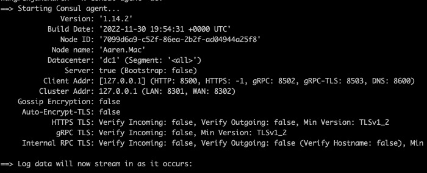
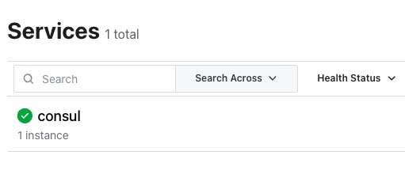
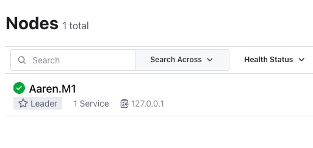

consul实战系列-之一 consul介绍和初体验
Page content
介绍
互联网软件的后台技术架构已经从单体到微服务，微服务再进一步演化为服务网格技术(Service Mesh)，当前服务网格的技术选项中Istio最为火热，但是也有不少公司选择consul
根据最近的工作，聊聊consul这个开源的服务网格工具实战技术，consul是HashiCorp这家做云计算IAAS软件的一个开源产品。
consul提供服务网格能力主要有以下这些功能
- 基于DNS和HTTP接口的服务注册和发现
- 服务访问控制
- 动态负载均
- 网络任务自动化
- 应用件请求流量mTLS加密
- 多云环境服务网格
- 应用可观测性
- 七层网络流量管理
这些基本上都是微服务常见概念了，做后端的同学应该都比较清楚， 本文就不深入去介绍，大家可以找相关资料来了解
Consul还可以与HashiCorp公司其它产品进行深度整合，简化应用的开发和运维工作
本地开发环境体验
大家可以从Consul下载页直接下载二进制包，或则通过操作系统的包管理工具来安装consul
安装完成之后，我们以开发模式运行一个consul实例
consul agent -dev
启动输出信息如下， 
这里解释下，这些选项意思
| 信息 | 说明 |
|---|---|
| NodeId | 生成的随机ID |
| Node Name | 运行机器的Hostname |
| DataCenter | 数据中心，默认用dc1 |
| Server | 以Server模式运行，consul 有server和clien两种模式 |
| Client Addr | 启动监听的IP地址，开发模式只监听127.0.0.1 |
| Cluster Addr | 集群地址，因为只有一台开发模式机器，因此只有127.0.0.1 |
| Gossip Encryption | Gossip是consul的采用的分布式节点消息传播协议 |
| Auto-Encrypt-TLS | 是否自动加密通信，本地开发模式不启用加密 |
| HTTPS TLS | 是否校验入站和出站的HTTP请求 |
| gRPC TLS | 是否校验入站和出站的gRPC请求 |
| Internal RPC TLS | 是否交易consul内部集群接gRPC入站和出站请求 |
consul启动之后有一个自带的service，名称为consul 
单节点模式运行，一个运行节点 
使用consul kv 体验KV功能
consul kv put consul/configuration/db_port 5432
# 输出提示: Success! Data written to: consul/configuration/db_port
consul kv get consul/configuration/db_port
# 输出5432
当然本地的consul kv 命令，最终转为HTTP Rest请求，可以看到输出日志 分别进行 PUT和GET的请求
2022-12-17T16:57:40.248+0800 [DEBUG] agent.http: Request finished: method=PUT url=/v1/kv/consul/configuration/db_port from=127.0.0.1:50386 latency="159.084µs"
2022-12-17T16:57:42.473+0800 [DEBUG] agent.http: Request finished: method=GET url=/v1/kv/consul/configuration/db_port from=127.0.0.1:50401 latency="87.083µs"
作为本系列的的第一篇文章，简单介绍了下consul是什么，下篇文章我们讲讲如何用consul搭建一个简单的继续、用使用spring cloud consul来做服务注册和服务发现